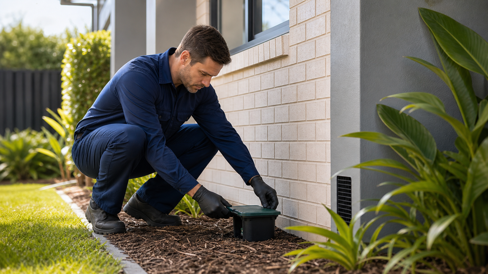

General Pest Control
Cockroach, ant and spider treatments planned around the property, season and household needs.
Read morePest control · Moreton Bay
BayShield Pest Control is a Goodman SEO sample site for a local pest technician. The copy is written around real Australian buyer expectations: termite risk, clear preparation notes, practical treatment options and calm follow-up advice.

Core pages
The page structure is based on Australian competitor patterns, then rewritten as original sample content for Goodman SEO.
Cockroach, ant and spider treatments planned around the property, season and household needs.
Read more
Annual termite inspection structure for timber, moisture, subfloor and perimeter risk areas.
Read more
Treatment planning for active termites, barriers and monitoring once an inspection confirms the issue.
Read more
Rodent control for homes, sheds, bins, ceiling cavities and light commercial premises.
Read more
Routine pest management plans for cafes, offices, warehouses and rental properties.
Read moreHow it works
Each sample has enough detail for service pages, local SEO, enquiry intent and sales conversations. The footer keeps the Goodman SEO demo disclosure visible without making the business page feel fake.
Read the service page and check whether the fit is right.
Send an enquiry with the practical details needed for a quote or booking.
Use the site as a starting point for a real buyer with their own details and photos.
Local coverage
These suburbs make the demo feel local. They should be replaced or tightened when a real business buys the site.
Use the form to send the enquiry to Goodman SEO. Phone and testimonials are sample placeholders until a real buyer supplies verified details.